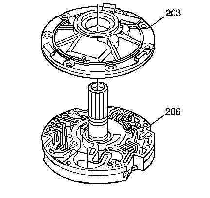
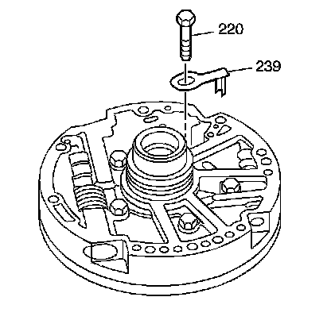
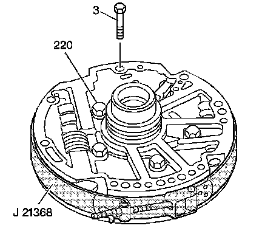
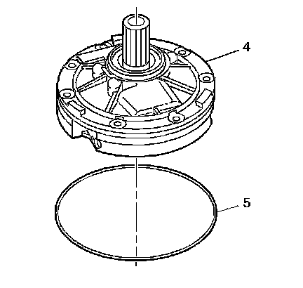
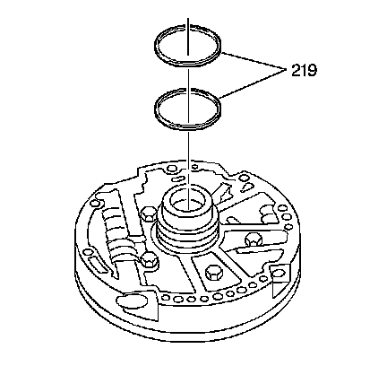

Transmission Oil Pump Assemble
Transmission Oil Pump Assemble
Tools Required
^ J 21368 Pump Body and Cover Alignment Band
^ J 36850 Transjel(R) Lubricant

1. Assemble the oil pump cover (206) and the oil pump body assembly (203).

Important: The tab on the vent passage splash shield (239) fits into the hole in the oil pump cover. The hole in the vent passage splash shield (239) fits under the bolt head.
2. Install the vent passage splash shield (239).
3. Install the oil pump cover bolts (220). Tighten the bolts with your fingers only.

4. Install an oil pump bolt and seal assembly (3) into an oil pump bolt hole.
Important: The outside diameter of the oil pump body assembly and oil pump cover must be properly aligned before the alignment band can be tightened. This ensures that the oil pump fits into the transmission case opening and maintains maximum oil pump efficiency.
5. Install the J 21368 onto the transmission oil pump assembly and tighten.
Notice: Refer to Fastener Notice.
6. Tighten the 5 oil pump cover bolts (220).
Tighten the bolts to 24 N.m (18 lb ft) in an alternating pattern.
7. Remove the J 21368 and the oil pump bolt and seal assembly (3).

Notice: Coat the transmission oil pump seal with J 36850 or equivalent. This will ease assembly and prevent damage to the seal.
8. Install the transmission oil pump seal (5) on the oil pump assembly (4).

Notice: Do not overexpand the oil seal rings. Damage to the rings may result.
9. Install the new overrun clutch housing oil seal rings (219) onto the oil pump cover.
10. Ensure that the overrun clutch housing oil seal rings (219) move freely in the grooves.
11. Use J 36850 or equivalent in order to keep the overrun clutch housing oil seal rings in place.